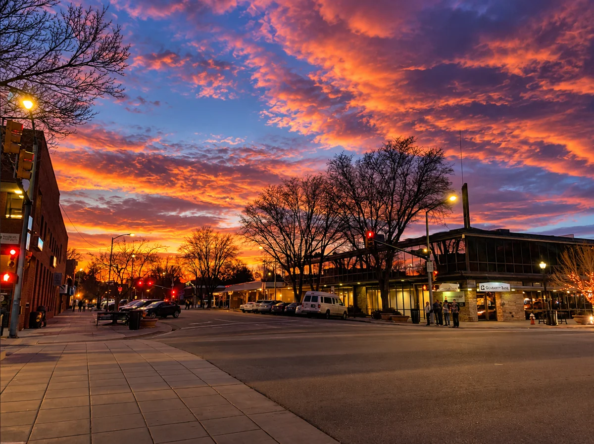
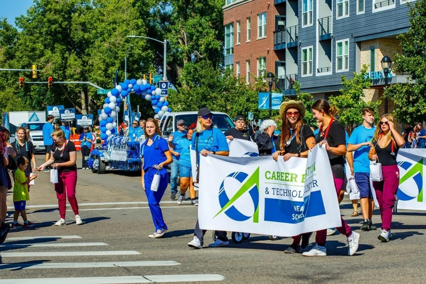

A little shop.
A lot to discover.
Meet Wolf & Wren, a downtown stop for paper goods, gifts, and thoughtful finds.
→Discover the people, places, and everyday moments that make Longmont home.
Explore LongmontGood people.
Brighter days.
Longmont, always. ♡


Callahan House · October 17
The Canvas Local Art Bar
Rocky Mountain Pumpkin Ranch
On the calendar: Murder Mystery Night at Callahan House, October 17, 6:30–9:45 p.m. Details & registration ↗ · Browse the other listings for current hours and activities.
Your story belongs here. Have a local business, community event, or favorite place to share? Help us keep Longmont connected.
Get in touch →